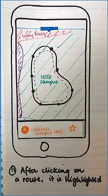
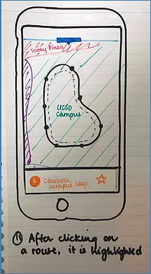
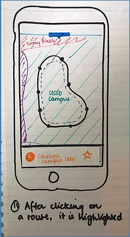

Lee Anne MercadoUser Experience Designer based in San Diego
About Me
I am a fourth year undergraduate student at the University of California, San Diego, currently earning a B.S. in Cognitive Science with a specialization in Human Computer Interaction and a minor in Design.
When I'm not conducting user interviews or creating prototypes, I love to watch shows, play video games, and go to Disneyland. Even through my personal experience of these casual activities, I am constantly inspired to find new ways of enhancing everyday experiences for users.
This search function prototype was created for Learning Equality's Content Curation server (a platform to create curriculum). It is a feature that facilitates the exploration of the CC server for content curators who deal with countless amounts of files and need to organize it. It focuses on alleviating the intimidation of the overwhelming website by enhancing the user experience.
This project is a redesign prototype of the UCSD Bus Website. It rethinks the overall layout in order to make interactions with the website intuitive for absolutely anyone to use. The new design focuses on discoverability of new routes, GPS navigation, and easy access to arrival times of bus stops.
Derived from the words "tutor" and "uber", Tuber is an uber for tutors. It is a mobile web application that facilitates the process of finding a tutor faster for UCSD college students. Simultaneously, it allows experts on certain subjects to offer help to fellow college students while making money.
Contact Me
Search Function
Introduction
Learning Equality is a non profit organization that delivers online education to places without wi-fi. A particular feature is the content curation (CC) server where content curators put together the material that learners will see. As a result of conducting interviews and synthesizing information about them, a pain point sources in not having a SEARCH FUNCTION available. The product of this project is a mockup of an overall search feature in the server.
1. Competitive Analysis
In order to understand the integral features that search functions provide, it was necessary to compare and contrast existing search functions on both educational and non-educational platforms that contained an ample amount of different types of files. From the 8 comparisons, there were clearly different emphasis on different features, depending on the user journey in the website.
(A few examples of the platforms)
For example, while Google Drive focuses on the real time search experience by providing results and other suggested searchable material as a dropdown menu on the bar itself (figure 1), Curriki (an educational platform) does not have these features but instead focuses on the metadata and context on the results page (figure 2). Both these features were considered and incorporated in the final design.
figure 1
figure 2
The most important features that made it into the final design are broken down as follows:
Overall, the competitive analysis helped clarify exactly how a search function can enhance the user experience when interacting with a website.
2. Personas
After a whole quarter of interviewing and understanding the content curator journey through the CC server, these interview results were analyzed and turned into user personas. These personas ranged from expert to novice in regards to exposure to the CC server, honing in on the variety of necessities each of these different levels needed. After analyzing the content curators's backgrounds, motivation & desires, and obstacles to success, it was clear what their respective needs were.
An example of how the personas contributed to the design of the search function:
A novice was having a difficult time understanding exactly what goes in her channel. A way to solve this would be to allow her to explore the fleshed out channels that all users have access to by using the search bar. Instead of having to click through all the different folders, she can simply type in a topic and see what types of materials people have for it, how they use tags, how they utilize the description feature for resources, how they order the folders and resources, etc.
3. Experience Map
As a result of creating the experience map, it was clear that the most important feature of the search bar is that it provides easy access to exploration of the entire server. Having access to it relieves the tension that new (or existing) content curators may be feeling from being overwhelmed and intimidated by the ample amount of information that the CC server contains.
4. Initial Ideas
In order to physically place my ideas about how to design the search function, I created wireframes on paper about potential structures for it.
Afterwards, I moved onto google slides to clearly see how this search function can be integrated into the CC server. Additionally, with the google slides feature of linking slides to each other, I made the prototype clickable to facilitate the experience of what it would be like to use this search function.
Real time search has suggested searchable words and results in the drop down Results page shows relevant resources under three main headers Clicking a resource pulls up the details to the center of the screen Clicking "more info" expands the extra metadata the user may want to know
After multiple iterations on the powerpoint as a result of feedback from staff around the office, I moved the final design on InVision.
5. Final Prototype: InVision
The link to the final prototype can be found HERE. Some important features of the prototype are the following:
The three headers are rearranged to mimic the hierarchy of what a channel contains. The three main filters that content curators look for is: resources, language, and channels. Hovering over each of the resources expands the details and minimizes clicking for users
UCSD Bus Website
Introduction
The University of California, San Diego has a shuttle system it provides for free for all its students, but surprisingly, it is not widely used by the entire population. The bus website, which should be alleviating this confusion, lacks clarity. My group of 5 people created a prototype redesign of the UCSD bus website.
1. User Interviews
We conducted two sets of interviews in order to narrow down the scope of the problem. The first set of interviews were conducted in order to understand where the problem points were with the shuttle system. We went around the UCSD campus to interview people with a variety of different types of exposure to the shuttle system as well as two shuttle drivers (we understand that getting only 20+ interviews introduces a bias in the data). After synthesizing the results, we realized that a huge point of tension that we could focus on was the UCSD bus website, which currently looks like this:
After realizing this, we went back out on the field to conduct user interviews with the same demographic about the website. We asked them to participate in user testing by performing certain tasks on the website and asking them follow up questions about it. Through this, we discovered trends, mistakes, and slips that users made with the website.
2. Double Diamond Technique
In order to gather our thoughts to approach the prototypes, we used the double diamond technique. The technique first dives into all the different problems of the website, then starts narrowing the problems, finds a single problem, explores the different solutions and once again narrows down on realistic solutions for the website. Additionally, in order to settle which solutions were best for the whole team, we decided to do dot voting and the solutions with the most votes made it to the final solution.
We first came up with a wide variety of problems involving the website We then started narrowing down which were the most important issues and came up with one overall problem to solve: "the website is difficult for new users because it requires prior knowledge of routes" We started coming up with tons of different possible solutions to solve the problem After dot voting, we moved the most voted solutions to the narrow part of the diamond, choosing those to be part of our final design
3. Whiteboard Prototypes
We decided to do a sketching session where we each drew out our own preconceptions for the redesign. After this silent session, we came together as a group and critiqued each other’s work while deciding which features we liked best and wanted to put into the final redesign.
4. Paper Prototypes
We created paper prototypes about what would go into our recreation. We had two iterations: the first one elaborated on the layout of the website while the second iteration focused on clarifying and enhancing the “favorites” feature of the website as well as detailing how users can discover new routes through the map.
First Iteration
Second Iteration

5. Final Redesign
We finally moved on to our final redesign, which can be found here, where we made other changes because we realized what looked good on paper did not translate as well on the actual website. A major change we made was that we did not want the map to immediately show on the homepage but to have the user discover it via the arrow on the homepage, which contains the favorite stop times. This as a whole keeps the homepage less cluttered.
Project Title
Use this area of the page to describe your project. The icon above is part of a free icon set by
Flat Icons. On their website, you can download their free set with 16 icons, or you can purchase the entire set with 146 icons for only $12!
Use this area of the page to describe your project. The icon above is part of a free icon set by
Flat Icons. On their website, you can download their free set with 16 icons, or you can purchase the entire set with 146 icons for only $12!
Use this area of the page to describe your project. The icon above is part of a free icon set by
Flat Icons. On their website, you can download their free set with 16 icons, or you can purchase the entire set with 146 icons for only $12!
Use this area of the page to describe your project. The icon above is part of a free icon set by
Flat Icons. On their website, you can download their free set with 16 icons, or you can purchase the entire set with 146 icons for only $12!


 figure 1
figure 1
 figure 2
figure 2


 
